Jérémy B.
Architecte SI / Cloud, freelance
+10hpar semaine
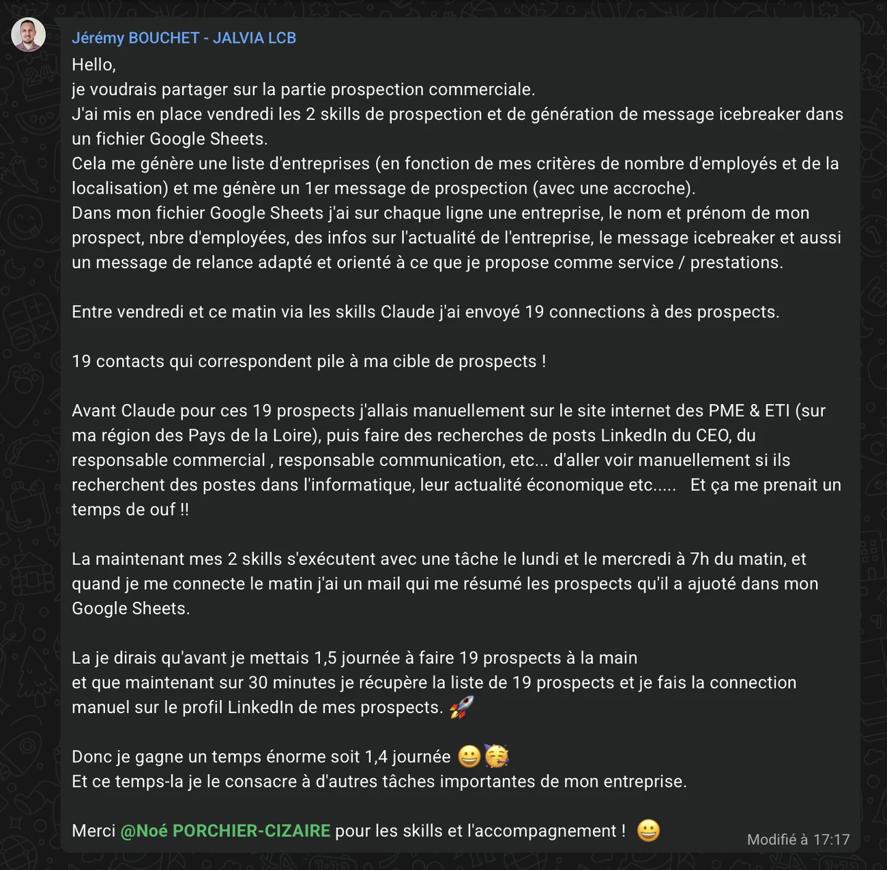
Coaching IA gratuit · en direct dans Claude
Tu réexpliques ta boîte à l'IA tous les matins, tu corriges, tu recolles. Le problème, c'est pas tes prompts : on t'a appris à parler à l'IA, personne t'a appris à la construire. Mardi midi, on construit ensemble ton bras droit IA dans Claude, en direct, pour récupérer jusqu'à 14 h par semaine. Tu repars avec.

En direct avec Noé Porchier-CizaireFondateur du Cockpit Business, plus de 85 entrepreneurs accompagnés

+85 entrepreneurs ont déjà récupéré leurs soirées
C'est noté, à mardi 12h30.
Ta place est réservée. La confirmation arrive par email : regarde dans les promotions si tu ne la vois pas.
Pas encore envoyé ta question ? Réponds simplement au mail de confirmation.
En vrai
Celui que tu commences à construire mardi midi.
Ce matin, 9h
Le vrai problème
Tu lui poses une question, tu copies la réponse, tu la corriges, tu la recolles ailleurs. Et le lendemain, tu lui réexpliques tout depuis le début. Tu t'es rajouté du boulot. Ceux qui avancent vite ont arrêté de discuter avec l'IA : ils en ont fait leur bras droit.
Tes clients, tes offres, ta façon d'écrire. Tu lui réexpliques plus rien.
Il a appris tes tâches : devis, mails, relances, comptes-rendus. Il les fait comme toi.
Il est branché sur tes outils et il travaille à heure fixe. Toi, tu valides.
Témoignages
Elaine L., en trois vidéos
Leurs messages, en entier
Jérémy B.
Architecte SI / Cloud, freelance
+10hpar semaine

Diane L.
Consultante IA et transformation digitale
+7hpar semaine
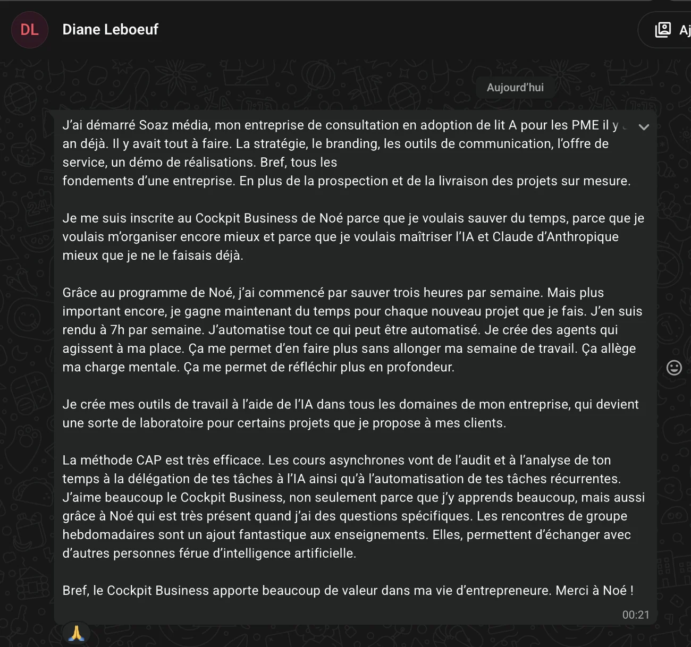
Michel Q.
Conseiller en gestion de patrimoine
+2h30par semaine
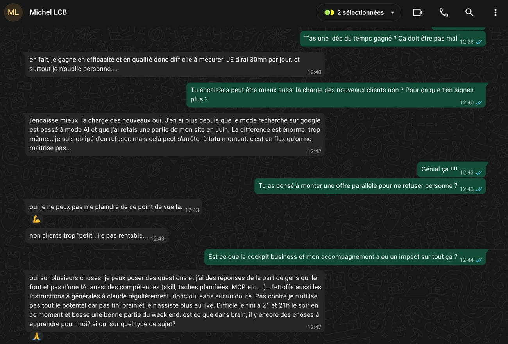
Ce qu'ils en disent, à chaud
Messages reçus pendant le programme.
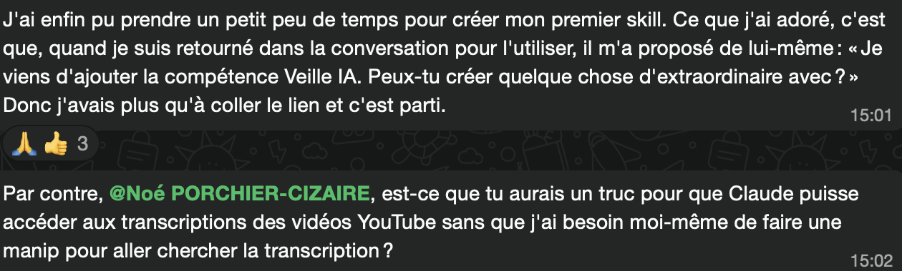
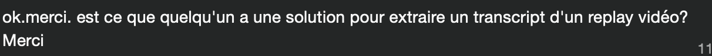

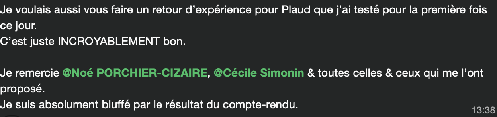
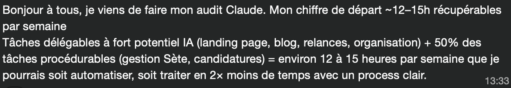
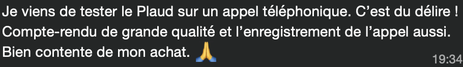
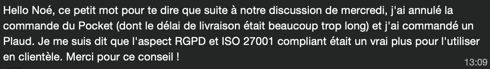

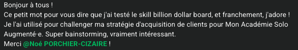

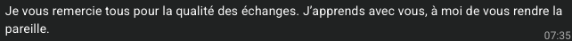
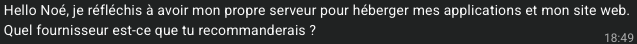
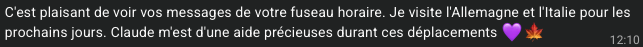
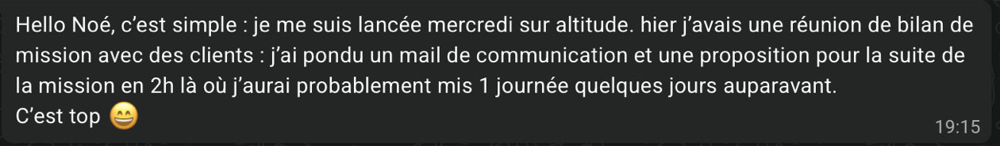
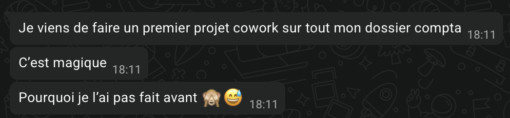
Au programme
Tes offres, tes clients, ta façon d'écrire : on lui donne tout ça une fois pour toutes, dans Claude.
Celle qui te prend le plus de temps chaque semaine. Tu la lui montres, il la refait à ta manière.
Je te montre mon propre bras droit IA, branché sur mes mails, mon agenda et ma prospection, écran partagé.
Sans filtre, et tu repars avec ton bras droit IA, pas avec des notes.
Pour qui
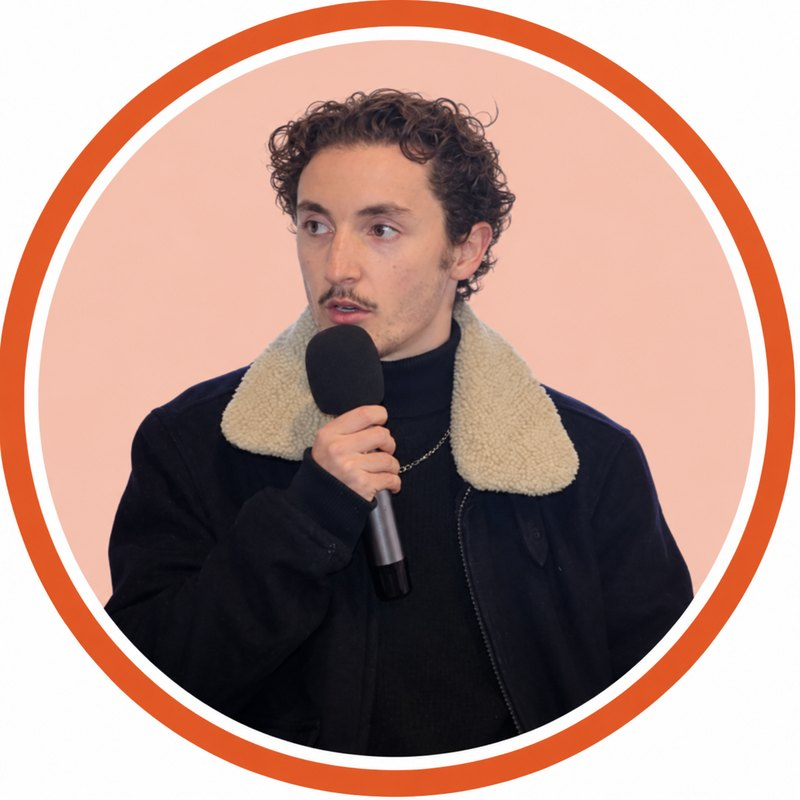
Qui anime
J'ai été exactement comme toi : les soirées et les dimanches sur l'ordi. Je dirige PRCZ, une agence de stratégie IA pour PME, et j'ai accompagné plus de 85 entrepreneurs avec la méthode CAP. Mardi, on construit ton bras droit IA ensemble, je te montre le mien, et je réponds à tes questions.
Ta place est réservée
C'est noté,
à mardi 12h30.
Dernière étape, la plus importante : mets le live dans ton agenda. Mardi midi, t'auras 1 000 trucs en tête. Ton agenda, lui, n'oubliera pas.
Ajouter le live à mon agenda iPhone, Apple ou Outlook ? Télécharge le fichier agenda (rappel la veille + 15 min avant)La confirmation arrive aussi par email : regarde dans les promotions si tu ne la vois pas.